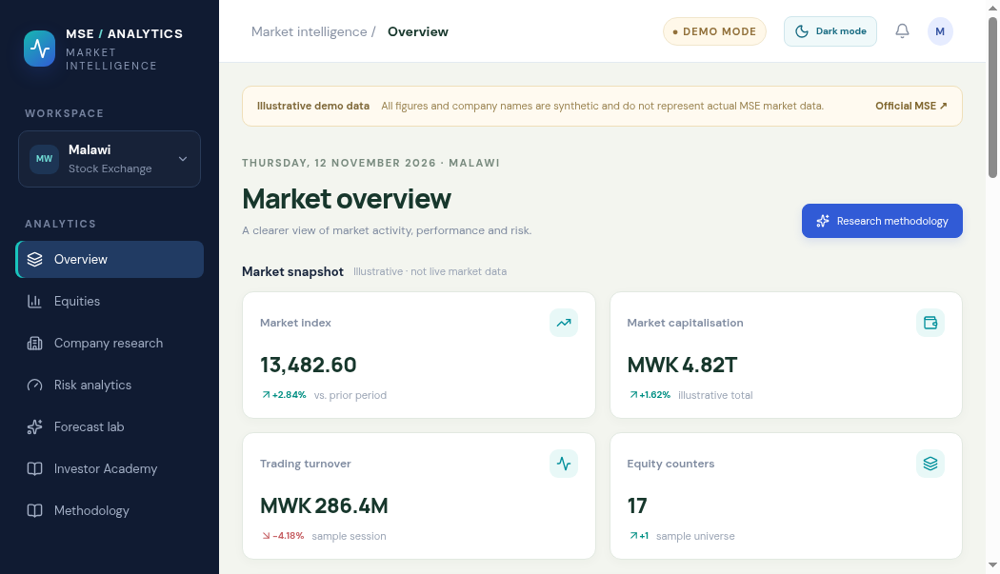

Data governance
Obtain the necessary approval and clarify permitted data fields, reuse, attribution and publication conditions.
PROJECT CASE STUDY / 002 · WORK IN PROGRESS
OFFICIAL DATA APPROVAL PENDINGAn independent data science and market intelligence prototype exploring how Malawi’s equity-market information could be organised, analysed and communicated through an accessible analyst workspace.
CURRENT INTERFACE

THE RESEARCH DIRECTION
The project is intended to explore a structured analytics experience for market overview, equity counters, company research, risk analysis, forecasting experiments and investor education.
The current interface is a design and engineering prototype. It is not an official MSE product and does not imply endorsement, partnership or authorisation by the Malawi Stock Exchange.
Use of official MSE data is pending approval. Until permission and the appropriate data access are obtained, the prototype will continue to use clearly labelled synthetic data and will not publish claims about actual market performance.
PLANNED WORKFLOW
Obtain the necessary approval and clarify permitted data fields, reuse, attribution and publication conditions.
Document source coverage, reporting frequency, missing values, corporate actions and validation checks.
Develop descriptive market, company and liquidity analysis only after approved data has been obtained and checked.
Explain methodology, limitations and findings so readers can distinguish measured evidence from assumptions.
PROJECT STATUS
The next major milestone is approval to use official MSE data. The project will be updated when that approval and a suitable dataset are available.